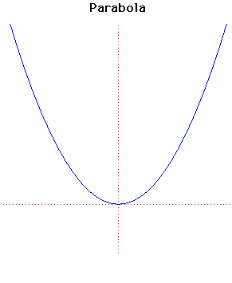

class: inverse, middle, center # Discrete Random Variables and <br> Probability Distributions # <font size=2>Textbook Chapter 4-5</font> --- .left-column[ ## Preliminary ] .right-column[ ## Functions Functions map elements of sets to elements of sets. Note: these sets need not be sets of numbers! ] --- .left-column[ ## Preliminary ] .right-column[ ## Functions <img src="car_function.jpg", height= 350> <center>This is a function</center> ] --- .left-column[ ## Preliminary ] .right-column[ ## Functions <img src="car_function2.jpg", height= 350> <center>This is also function</center> ] --- .left-column[ ## Preliminary ] .right-column[ ## Functions <img src="car_function3.jpg", height= 350> <center>This is not a function</center> ] --- .left-column[ ## Preliminary ] .right-column[ ## Functions <img src="die_map1.jpg", height= 350> <center><font size=2>This function maps elements of the sample space to numbers</center> ] --- .left-column[ ## Preliminary ] .right-column[ ## Functions <img src="die_map.jpg", height= 350> <center><font size=2>I could have named this function anything, so I named it $X$ instead of $f$</font></center> ] --- .left-column[ ## Preliminary ## RVs ] .right-column[ ## RVs Despite the name, **random variables** are *functions* from the sample space to the real line. <br> + Coin tosses: $ \ \ X(H) = 1,\ \ \ X(T) = 0$ + Sum of coin tosses: $ \ \ X(HH) = 2,\ \ \ X(HT) = 1 \ \ \ X(TH) = 1 \ \ \ X(TT) = 0$ <br> It's common to represent real variables by capital letters. ] --- .left-column[ ## Preliminary ## RVs ## Types ] .right-column[ ## Random variables Random variables come in two flavors. + **Continuous** rvs can take any value in an interval: + temperature + time + volume + height + beer ] -- .right-column[ + **Discrete** rvs take values that are somehow "separated": + grades: {0,1,2,3,4,5,6,7,8,9,10} + coin tosses: {0, 1} + dice rolls: {1,2,3,4,5,6} + sandwiches: {0,1,2,3,...} .footnote[.red[*] <font size=1> Math geeks: discrete rvs take values over a countable set, continuous rvs take values over an uncountable one. </font>] ] --- .left-column[ ## Preliminary ## RVs ## Types ] .right-column[ ## PMFs and CDFs There are two functions associated with each random variable. + Probability mass functions (discrete) / Probability density functions (continuous) + Cumulative distribution functions ] --- .left-column[ ## Preliminary ## RVs ## Types ## PMFs ] .right-column[ ## Probability Mass Functions <b>Probability mass functions</b>, or pmfs, are functions that denote the probability that the random variable will have some value. They are often denoted $p_X(x)$, or occasionally $p(x)$. ] -- .right-column[ If $X$ encodes a fair coin toss as 0 (Tails) or 1 (Heads), then its pmf is: $$p_X(0) = \frac{1}{2} \qquad p_X(1) = \frac{1}{2} \qquad p_X(x) = 0 \text{ for any other }x$$ ] --- .left-column[ ## Preliminary ## RVs ## Types ## PMFs ] .right-column[ ## Probability Mass Functions <b>Probability mass functions</b>, or pmfs, are functions that denote the probability that the random variable will have some value. They are often denoted $p_X(x)$, or occasionally $p(x)$. ] .right-column[ If $X$ encodes a die roll as numbers from 1 to 6, then its pmf is: $$ p_X(x) = \begin{cases} \frac{1}{6} \qquad \text{if }x \text{ is }1,2,3,4,5,\text{ or }6 \\\ 0 \qquad \text{otherwise} \end{cases} $$ ] --- .left-column[ ## Preliminary ## RVs ## Types ## PMFs ] .right-column[ ## Probability Mass Functions <b>Probability mass functions</b>, or pmfs, are functions that denote the probability that the random variable will have some value. They are often denoted $p_X(x)$, or occasionally $p(x)$. ] .right-column[ If $X$ encodes the number of Heads in 3 coin tosses, then its pmf is: .center[<img src="pmf3coins.png" height = 80>] ] .right-column[ All three ways of representing the function are valid. ] --- .left-column[ ## Preliminary ## RVs ## Types ## PMFs ] .right-column[ ## How to find the probabilities? Let's take previous example. Suppose we know that $X$ encodes the number of Heads in 3 coin tosses. How can we find the associated probabilities? ] -- .right-column[ The first step is to figure out: what are the possible values that $X$ can take?.red[*] .footnote[<font color="red">*</font> <font size=1>In advanced textbooks, the set of these values is called the <b>support</b> of $X$.</font>] ] -- .right-column[ In three coin tosses, there could be $0, 1, 2$ or $3$ heads. ] --- .left-column[ ## Preliminary ## RVs ## Types ## PMFs ] .right-column[ ## How to find the probabilities? Next, it's useful to enumerate the sample space. <img src="coin.jpg" height=400> ] --- .left-column[ ## Preliminary ## RVs ## Types ## PMFs ] .right-column[ ## How to find the probabilities? Then, assign the probabilities accordingly. <img src="coin2.jpg" height=400> ] -- .right-column[ Once again, we see probabilities as <i>relative size</i>. ] --- .left-column[ ## Preliminary ## RVs ## Types ## PMFs ## Notation ] .right-column[ ## Two remarks on notation #### 1. Upper case for random, lower case for outcome Whenever possible.red[*], random variables are denoted by capital letters. <img src="bigx.png" height=250> .footnote[<font size=1>.red[*] This won't be always possible in the case of greek letters :-( </font>] ] --- .left-column[ ## Preliminary ## RVs ## Types ## PMFs ## Notation ] .right-column[ ## Two remarks on notation #### 1. Upper case for random, lower case for outcome While their outcome is denoted by lower case letters, like $x$ or $k$ (for integers). $$ p_X(x) = \begin{cases} \frac{1}{6} \qquad \text{if }x \text{ is }1,2,3,4,5,\text{ or }6 \\\ 0 \qquad \text{otherwise} \end{cases} $$ .center[(With $x$)] ] --- .left-column[ ## Preliminary ## RVs ## Types ## PMFs ## Notation ] .right-column[ ## Two remarks on notation #### 1. Upper case for random, lower case for outcome While their outcome is denoted by lower case letters, like $x$ or $k$ (for integers). $$ p_X(k) = \begin{cases} \frac{1}{6} \qquad \text{if }k \text{ is }1,2,3,4,5,\text{ or }6 \\\ 0 \qquad \text{otherwise} \end{cases} $$ .center[(With $k$)] ] --- .left-column[ ## Preliminary ## RVs ## Types ## PMFs ## Notation ] .right-column[ ## Two remarks on notation #### 2. $P(X = x) = p_X(x)$ Both notations mean the same thing: .center[*The probability that the random variable $X$ takes value $x$* <figure> <img src="bookpmf.png" width = 500> <img src="bookpmf2.png" width = 200> <figcaption><font size=2>Two examples from the book (p 58 and p 65).</figcaption> </figure> ] ] --- .left-column[ ## Preliminary ## RVs ## Types ## PMFs ## Notation ## Graph ] .right-column[ ## A note on graphing PMFs Here's the PMF of a die roll. $$ p_X(x) = \begin{cases} \frac{1}{6} \qquad \text{if }x \text{ is }1,2,3,4,5,\text{ or }6 \\\ 0 \qquad \text{otherwise} \end{cases} $$ ] -- .right-column[ Technically, if you graph a that, you get .center[<img src="discrete1.png", height = 280>] ] --- .left-column[ ## Preliminary ## RVs ## Types ## PMFs ## Notation ## Graph ] .right-column[ ## A note on graphing PMFs Here's the PMF of a die roll. $$ p_X(x) = \begin{cases} \frac{1}{6} \qquad \text{if }x \text{ is }1,2,3,4,5,\text{ or }6 \\\ 0 \qquad \text{otherwise} \end{cases} $$ ] .right-column[ But it's more common to graph it like this. .center[<img src="discrete2.png", height = 280>] ] --- .left-column[ ## Preliminary ## RVs ## Types ## PMFs ## Notation ## Graph ## CDFs ] .right-column[ ## Cumulative distribution functions Another useful function is the <b>cumulative distribution function</b>, or CDF, defined as: $$F_X(x) = P(X \leq x)$$ ] -- .right-column[ It's the probability that the outcome of $X$ is <i>smaller than or equal to</i> some number $x$. <br><br> .center[<img src="discrete3cdf.png" height = 180>] .footnote[<font size=2>.red[*] I'll denote cdfs with capital $F$, pmfs with lower case $p$ or, sometimes, $f$. </font>] ] --- .left-column[ ## Preliminary ## RVs ## Types ## PMFs ## Reps ## Graph ## CDFs ] .right-column[ ## Cumulative distribution functions <img src="pmf_cdf.png" width =600> <font size=3>For discrete distributions, the <b>cdf</b> jumps at points of positive probability, and is constant everywhere else. <br><br>The height of the jump is the height to the pmf.</font> ] --- class: inverse, middle, center ## Common discrete distributions --- .left-column[ ## Distributions ] .right-column[ ## Discrete vs. Continuous Just one more piece of terminology: For a *discrete* random variables $X$, $p_X$ is called <center><b>probability <i>mass</i> function.</b></center> For *continuous* random variables $X$, $p_X$ is called <center><b>probability <i>density</i> function.</b></center> .right[<font size= "2">(we'll see them in a later lecture)</font>] The general name is *probability distribution* (function). ] --- .left-column[ ## Distributions ] .right-column[ ## Famous distributions In math classes, you saw some famous functions.  <img src="funcs2.jpg" height = 200> .center[<img src="funcs3.png" height = 200>] ] --- .left-column[ ## Distributions ] .right-column[ ## Famous distributions In statistics, there are famous distributions as well! <img src="famous1.png" height = 190> <img src="famous2.png" height = 190> <img src="famous3.png" height = 190> <img src="famous4.png" height = 150> By the end of the semester, you'll be an expert in them. ] --- .left-column[ ## Distributions ## Bernoulli ] .right-column[ ## Bernoulli Distribution We say <i>$X$ is distributed as Bernoulli with <b>parameter</b> $p$</i> if: + X takes value 1 with probability $p$ + X takes value 0 with probability $1-p$ <br> This is written as "$X \sim Bern(p)$", which is pronounced as "$X$ is distributed as ""$X$ is Bernoulli p". .footnote[<font size =1>*PRO TIP* If you want to be *really* good at stats, you should get well-acquainted with probability distributions and their properties!</font>] ] --- .left-column[ ## Distributions ## Bernoulli ] .right-column[ ## Varying the parameter $p$ <img src="bern5.png" height="350"> .center[*A fair coin*] ] --- .left-column[ ## Distributions ## Bernoulli ] .right-column[ ## Varying the parameter $p$ <img src="bern9.png" height="350"> .center[*A biased coin*] ] --- .left-column[ ## Distributions ## Bernoulli ] .right-column[ ## Varying the parameter $p$ <img src="bern1.png" height="350"> .center[*A double-headed coin*] ] --- .left-column[ ## Distributions ## Bernoulli ] .right-column[ ## .center[Feel the Bern] .center[<img src="Jakob_Bernoulli.jpg" height="350"><br> *Jakob Bernoulli, one of the many mathematicians of the [Bernoulli family](https://en.wikipedia.org/wiki/Bernoulli_family)*] ] --- .left-column[ ## Distributions ## Bernoulli ## DiscreteUnif ] .right-column[ ## Discrete Uniform .center[<img src="wiki_dunif1.png" height = 300>] The parameters are $a, b$ (Interval boundaries) Used for: events that have equal probability Example: die roll ] --- .left-column[ ## Distributions ## Bernoulli ## DiscreteUnif ] .right-column[ ## Discrete Uniform .center[<img src="wiki_dunif2.png" height = 300>] The parameters are $a, b$ (Interval boundaries) Used for: events that have equal probability Example: die roll ] --- .left-column[ ## Distributions ## Bernoulli ## DiscreteUnif ] .right-column[ ## Discrete Uniform <br> .center[ <img src="discrete2.png" width=500><br> Varying the parameters $a,b$] ] --- .left-column[ ## Distributions ## Bernoulli ## DiscreteUnif ] .right-column[ ## Discrete Uniform <br> .center[ <img src="discrete3.png" width=500><br> Varying the parameters $a,b$] ] --- .left-column[ ## Distributions ## Bernoulli ## DiscreteUnif ] .right-column[ ## Discrete Uniform <br> .center[ <img src="discrete4.png" width=500><br> Varying the parameters $a,b$] ] --- .left-column[ ## Distributions ## Bernoulli ## DiscreteUnif ] .right-column[ ## Discrete Uniform <br> .center[ <img src="discrete5.png" width=500><br> Varying the parameters $a,b$] ] --- .left-column[ ## Distributions ## Bernoulli ## DiscreteUnif ## Binomial ] .right-column[ ## Binomial distribution Let $X_1, X_2$ be two Bernoulli-distributed random variables, both with parameter $p = \frac{1}{2}$. Let $Z$ be their sum. What is the pmf of Z? $p_{Z}(0) = P(Z = 0) = \qquad \qquad $ $p_{Z}(1) = P(Z = 1) = \qquad \qquad $ $p_{Z}(2) = P(Z = 2) = \qquad \qquad $ .footnote[<font size=1>PRO TIP: New notation is always scary, but you'll get used to it soon. Always try to understand what's going on at an intuitive level first, then translate that into symbols.</font>] ] --- .left-column[ ## Distributions ## Bernoulli ## DiscreteUnif ## Binomial ] .right-column[ ## Binomial distribution <img src="bin1.png" height="350"> .center[] ] --- .left-column[ ## Distributions ## Bernoulli ## DiscreteUnif ## Binomial ] .right-column[ ## Binomial distribution Let $X_1, X_2$ be two Bernoulli-distributed random variables, both with parameter $p = \frac{1}{3}$. Let $Z$ be their sum. What is the pmf of Z? $p_{Z}(0) = P(Z = 0) = \qquad \qquad $ $p_{Z}(1) = P(Z = 1) = \qquad \qquad $ $p_{Z}(2) = P(Z = 2) = \qquad \qquad $ ] --- .left-column[ ## Distributions ## Bernoulli ## DiscreteUnif ## Binomial ] .right-column[ ## Binomial distribution <img src="bin2.png" height="350"> .center[] ] --- .left-column[ ## Distributions ## Bernoulli ## DiscreteUnif ## Binomial ] .right-column[ ## Binomial distribution Let $X_1, X_2, X_3$ be two Bernoulli-distributed random variables, both with parameter $p = \frac{1}{2}$. Let $Z$ be their sum. What is the pmf of Z? $$p_{Z}(0) = \qquad \qquad $$ $$p_{Z}(1) = \qquad \qquad $$ $$p_{Z}(2) =\qquad \qquad $$ $$p_{Z}(3) =\qquad \qquad $$ .center[<font size=1>Check this by yourself!</font>] ] --- .left-column[ ## Distributions ## Bernoulli ## DiscreteUnif ## Binomial ] .right-column[ ## Binomial distribution <img src="bin3.png" height="350"> .center[] ] --- .left-column[ ## Distributions ## Bernoulli ## DiscreteUnif ## Binomial ] .right-column[ ## Binomial distribution In general, we say that *$Z$ is distributed as Binomial with parameters $n$ and $p$* if it's the sum of $X_1, \cdots, X_n$ random variables distributed with parameter $p$. We denote that as $Z \sim Bin(n, p)$. The formula for the pmf is $$p_Z(k) = {n \choose k}p^k(1-p)^{n-k}$$ where ${n \choose k} = \frac{n!}{(n-k)!k!}$, the binomial coefficient. .footnote[<font size=2>Looks hairy, doesn't it? Actually, as you'll find out for yourself in the next homework, this is actually quite understandable (I promise!)</font>] ] --- .left-column[ ## Distributions ## Bernoulli ## DiscreteUnif ## Binomial ] .right-column[ ## Varying the parameters $(n,p)$ <img src="bin4.png" height="350"> ] --- .left-column[ ## Distributions ## Bernoulli ## DiscreteUnif ## Binomial ] .right-column[ ## Varying the parameters $(n,p)$ <img src="bin5.png" height="350"> ] --- .left-column[ ## Distributions ## Bernoulli ## DiscreteUnif ## Binomial ] .right-column[ ## Varying the parameters $(n,p)$ <img src="bin6.png" height="350"> ] --- .left-column[ ## Distributions ## Bernoulli ## DiscreteUnif ## Binomial ] .right-column[ ## Varying the parameters $(n,p)$ <img src="bin7.png" height="350"> ] --- .left-column[ ## Distributions ## Bernoulli ## DiscreteUnif ## Binomial ] .right-column[ ## Varying the parameters $(n,p)$ <img src="bin8.png" height="350"> ] --- .left-column[ ## Distributions ## Bernoulli ## DiscreteUnif ## Binomial ] .right-column[ ## Varying the parameters $(n,p)$ <img src="bin9.png" height="350"> ] --- .left-column[ ## Distributions ## Bernoulli ## DiscreteUnif ## Binomial ] .right-column[ ## Varying the parameters $(n,p)$ <img src="bin10.png" height="350"> ] --- .left-column[ ## Distributions ## Bernoulli ## DiscreteUnif ## Binomial ] .right-column[ ## Varying the parameters $(n,p)$ <img src="bin10.png" height="350"> ] --- .left-column[ ## Distributions ## Bernoulli ## DiscreteUnif ## Binomial ## Geom ] .right-column[ ## Geometric Distribution <font size=5> $$P(X = k) = (1-p)^{k-1}p$$ </font> .center[<img src="wiki_geom1.png" height = 300>] + Parameters: p (success probability at each trial) + Used for: <i>trials</i> until success + Example: children until first son ] --- .left-column[ ## Distributions ## Bernoulli ## DiscreteUnif ## Binomial ## Geom ] .right-column[ ## Geometric Distribution <font size=5> $$P(X = k) = (1-p)^{k-1}p$$ </font> .center[<img src="wiki_geom2.png" height = 300>] + Parameters: p (success probability at each trial) + Used for: <i>trials</i> until success + Example: children until first son ] --- .left-column[ ## Distributions ## Bernoulli ## DiscreteUnif ## Binomial ## Geom ## Poisson ] .right-column[ ## Poisson Distribution The <b>Poisson distribution</b> is what we get if we take a Bernoulli with very large $n$ and very small $p$. <font size=5> $$P(X = k) = e^{-\lambda} \frac{\lambda^{k}}{k!}$$ </font> .center[<img src="wiki_pois1.png" height = 230>] + Used for: number of times an event occurs in an interval of time or space. + Parameters: $\lambda$ (avg number of successes during interval) ] --- .left-column[ ## Distributions ## Bernoulli ## DiscreteUnif ## Binomial ## Geom ## Poisson ] .right-column[ ## Poisson Distribution The <b>Poisson distribution</b> is what we get if we take a Bernoulli with very large $n$ and very small $p$. <font size=5> $$P(X = k) = e^{-\lambda} \frac{\lambda^{k}}{k!}$$ </font> .center[<img src="wiki_pois2.png" height = 230>] + Used for: number of times an event occurs in an interval of time or space. + Parameters: $\lambda$ (avg number of successes during interval) ] --- .left-column[ ## Distributions ## Bernoulli ## DiscreteUnif ## Binomial ## Geom ## Poisson ] .right-column[ ## Poisson Distribution The <b>Poisson distribution</b> is what we get if we take a Bernoulli with very large $n$ and very small $p$. <font size=5> $$P(X = k) = e^{-\lambda} \frac{\lambda^{k}}{k!}$$ </font> .center[<img src="wiki_pois2.png" height = 230>] + Used for: number of times an event occurs in an interval of time or space. + Parameters: $\lambda$ (avg number of successes during interval) ] --- class: inverse, middle, center # Quick check --- # Quick check <b>What's a random variable?</b> <b>What's a probability distribution? </b> <b>What's a probability mass function? </b> <b>When should we use Bernoulli random variables?</b> <b>How about Binomial random variables?</b> --- ## Quick check <b>What's a random variable?</b> <font size=2>It's a <i>function</i> that maps the outcome of an experiment to a numerical value.</font> <b>What's a probability distribution? </b> <font size=2>It's function that maps the numerical outcome of an experiment back to the probability of that outcome. For example, if we have a random variable $X$ that maps $Heads$ and $Tails$ to 1 and 0, then $p_X(1) = \frac{1}{2}$ and $p_X(0) = \frac{1}{2}$.</font> <b>What's a probability mass function? </b> <font size=2>The probability distribution of a discrete random variable.</font> --- ## Quick check <b>When should we use Bernoulli random variables?</b> <font size=2> When we are dealing with one binary (i.e., "YES/NO") event, as in: <ul> <li> Heads or Tails <li> Survival or Death <li> Trump or Hillary (i.e., "Not Trump") <li> Rice or Cake (i.e., "Not Rice") </ul> </font> <b>How about Binomial random variables?</b> <font size=2>When there are multiple binary events, and we are interested in <i>how many</i> of these events turned out "YES" and how many turned out "NO". <ul> <li>Sum of coin tosses (i.e., coins can be Heads or Tails. How many heads?) <li>Number of customers in a store (i.e, customers can enter a store or not. How many customers entered?) <li>How many machines broke one year after purchase? </ul> </font>